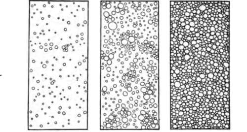
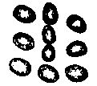

Food For The Body. Continued
Description
This section is from the book "The Human Body And Health", by Alvin Davison. Also available from Amazon: The Human Body and Health.
Food For The Body. Continued
Boiled milk should not be used regularly unless a physician directs it. One or two quarts of clean milk taken daily is a great help both in preventing and curing tuberculosis. Milk at six cents per quart would be a cheap food. Two quarts of milk costing twelve cents would supply the body with about the same amount of nourishment as one pound of sirloin steak costing twenty-four cents.
Skim Milk, Cream And Butter
The fatty part of milk is in the form of tiny balls which rise to the surface when milk is left standing several hours. This collection of fat balls or globules with the milk surrounding them is called cream. When the cream is poured away or dipped off, the remaining bluish white fluid is known as skim milk.
By dashing the whole milk or only the cream about in a closed box or barrel, called a churn, the globules of fat are broken up and made to collect in yellow masses forming butter. It requires about three gallons of milk to make one pound of butter.
The milk from which the butter has been removed by churning is called buttermilk. It often has a sour taste due to the work of bacteria which changed the sugar of the sweet milk into an acid. Buttermilk is a healthful drink and aids digestion. Both buttermilk and skim milk are valuable foods. Two quarts of either of them will furnish nearly as much nourishment to the body as a pound of beef steak.
Fig. 21. Tiny balls of fat in skim milk, whole milk and cream. Note how much more fat there is in cream.
Fig. 22. The bacteria which cause milk to sour. Much enlarged.
Soups
Soups are made by placing vegetables or meats in cold water which is then gradually heated to near the boiling point. This temperature is maintained from a half hour to several hours, so as to dissolve out as much nourishment as possible from the solid parts.
Soups do not contain much nourishment but are useful at the beginning of a meal to start the flow of the digestive juices, and thus prepare for the real food to be eaten later. They also prevent one when very hungry from overeating, as they give the desired feeling of fulness without the presence of much solid matter.
Vegetable Foods
Many vegetable foods contain a large amount of nourishment. Bread, corn meal, oatmeal, rice, potatoes, peas and beans have a large food value. They are also cheap foods and when well chewed are healthful. Ten cents' worth of oatmeal will yield more food for the body than forty cents' worth of beefsteak. Ten cents spent for small white dried beans will purchase more food for the body than fifty cents spent for smoked ham.
The common breakfast foods made from the cereals, wheat, corn, and oats, are healthful and nourishing, but more expensive than hominy, oatmeal or corn meal.
Turnips, cabbage, beets, lettuce and cauliflower, radishes, onions and asparagus contain much water and but little nourishment. They are useful in increasing the action of the digestive organs, and in supplying mineral matter. Their pleasing taste also gives a better appetite. Many headaches and other pains such as those from rheumatism may sometimes be avoided by refusing meats and using certain vegetables.
Fruits
The fruits contain very little nourishment but furnish minerals and hasten the action of the digestive organs. Partly decayed or unripe fruit should never be used as it may cause serious sickness. Fruits may be eaten either raw or cooked. Before eating the larger fruits, the peel or outside skin which may bear bacteria and dirt should be removed.
Why Alcohol Should Not Be Used As Food
Some scientists believe that alcohol, as found in beer or whisky, may be used by the body for food. Most scientific men, however, do not consider alcohol worthy of being called a food because it cannot be used day after day without hurting some of the organs in the body. In some cases it may furnish energy for work during a short period. It may also arouse and excite certain organs to do more work for a very short time, but soon these same organs, as a result of the unnatural urging, work much slower than usual.
Why Alcohol Is Not A Complete Food
Alcohol is not a complete food in any form, because it cannot build up muscle, blood, bone, or any other tissue in the body. A person fed plenty of alcohol and nothing else will starve to death.
Some persons think alcohol is a food because they do not feel hungry after taking a drink. It lessens the desire for real food only by deadening the nerves which tell of the true need of food. Ale and beer contain a little food because they have in them some sugar and other substances. The great chemist Liebig said: "Nine quarts of the best ale contain as much nourishment as would lie on the end of a table knife".
Practical Questions
1. Of what does the body consist? 2. Why docs the body need food? 3. Name the two groups of foods. 4. In what foods does sugar occur? 5. Where is starch found? 6. In what food is fat present? 7. What is an oil? 8. Why is it harmful to eat more than the body needs? 9. What is dyspepsia? 10. Name some expensive foods. 11. Name some cheap foods. 12. What can you say of the use of meat? 13. Which cuts of meat are cheapest? 14. Tell what you know about the value of eggs for food. 15. Of what does milk consist? 16. What can you say of milk as a food? 17. Compare the value of milk with beefsteak. 18. How does skim milk differ from cream? 19. How is butter made? 20. How are soups made? 21. Of what use are soups? 22. What can you say of the value of vegetables for food? 23. How may headaches and rheumatism often be avoided? 24. Of what use are fruits? 25. Why should alcohol not be used as a food? 26. Why is alcohol not a complete food? 27. Why do some persons think alcohol is a food?
Suggestions For The Teacher
The teacher may impress upon the minds of the pupils the facts taught in this chapter by talking about the foods which they use at the different meals. In many cases the pupils will be found to be using foods giving too little real nourishment and to be spoiling the appetite by the frequent use of candies. The work in the school should be made a help in the home.
Continue to: